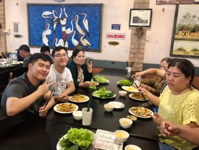
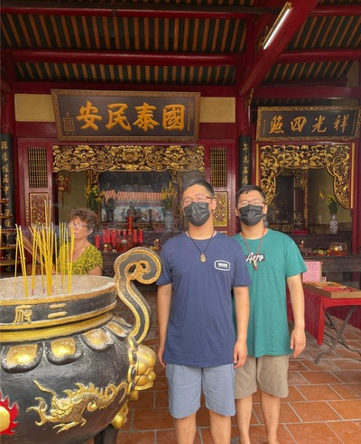
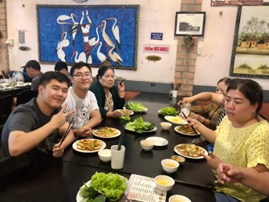
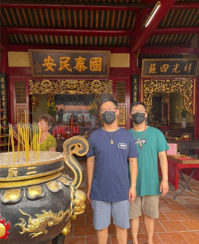
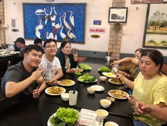
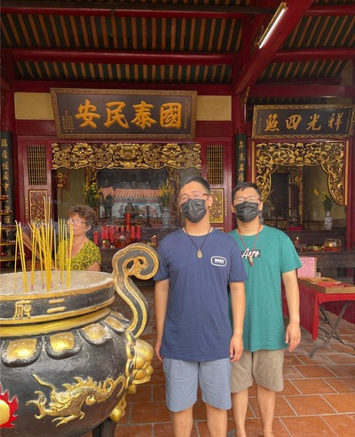
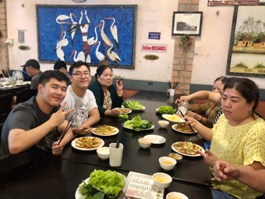
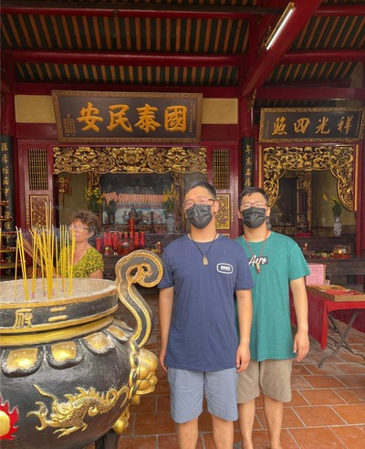

About Me
 







Hi, my name is Henry. My full name is Henry Vinh Tran, with my middle name coming from my Vietnamese heritage. Vinh means glory and, in conjunction with my brother's middle name, means victory; a way of my parents' advice to stick together and trust family. Tran is a Chinese surname—my father is Chinese—and the story goes that a government servant of the Tran emperor was bestowed the honor of the surname to his future descendants.
I have a passion for technology, especially in the field of Cybersecurity. I enjoy learning about new software and hardware, as well as keeping up with the latest trends in technology.
In my free time, I love to play video games, explore the outdoors, and spend quality time with my family and friends. I also enjoy playing the ukulele.
I graduated from high school with honors, including the Spanish Seal of Biliteracy, and participated in the IB Diploma Programme, which helped shape my academic interests and career goals. I am currently pursuing a Bachelor's in Applied Cybersecurity and IT.
I am proficient in various programming languages such as Python, Java, and HTML. I have hands-on experience with network security protocols and ethical hacking techniques, which I learned through coursework and personal projects.
I love traveling, especially to places rich in culture and nature. Some of my favorite places include:
Looking ahead, I aspire to become an expert in Cybersecurity, helping organizations protect their data and systems. I also plan to contribute to community outreach programs that teach young people about technology and internet safety.
Thank you for visiting my page! I look forward to sharing more about my journey and experiences as I continue to learn and grow in both my personal and professional life.